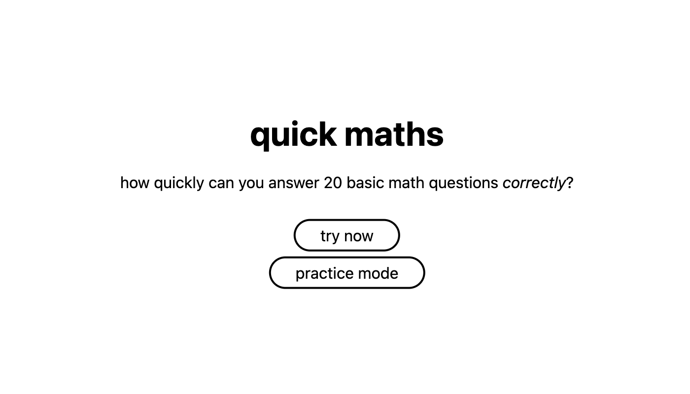

Kaylee Cragg Projects
KikiBot™
• Designed and implemented a set of Jupyter notebooks to automate the creation and uploading of shells/assets and platform images, enhancing workflow efficiency and reducing rate of error tenfold (1000%)
• Has been widely used by my company’s live operations team to maximise efficiency and lower the margin of human made error during busy periods.
• Utilized Python, Selenium, Puppeteer to build the automation aspect of the bots, and runs fully functional on Google Colab to increase usability.
• See the project on GitHub, and the google colab.

CMS Re-arranger
• Developed a web app that acts as a CMS (content management system) tool to help with organising large volumes of assets on BeBanjo Movida.
• Initially made to demo a non‑functioning tool to pitch to workplace’s product team.
• Utilized HTML, CSS and Javascript to build the app’s functionality and design, and deployed using Google Firebase.

Quick Maffs
• Developed a web app to allow users to test the quickness of their basic math skills against a timer.
• Basically Zetamac but worse.
• Utilized HTML, CSS and Javascript to build the app’s functionality and design, and deployed using Google Firebase.